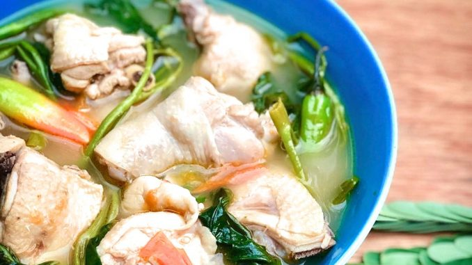

Chicken Sinigang

Description
Sinigang na Manok – Sinigang is an authentic Filipino dish. The basic
ingredient of sinigang can either be chicken, pork, fish, beef or shrimp
with a lot of vegetables. The souring ingredients often used are either
tamarind, calamansi, kamias or guava. Although, fresh tamarind or tamarind
mix is the most popular souring ingredient which is readily available.
Ingredients
- 500 gms chicken, cut into serving pieces
- 4 cloves garlic, crushed
- 1 medium onion, sliced
- 2 tomatoes, quartered
- 1 tamarind soup mix
- 1 bunch string beans (sitaw)
- 1 large radish, sliced diagonally
- 1 bunch kangkong
- 2 finger chilies (siling haba)
- 5 cups water
- 2 tsp vegetable oil
- salt/fish sauce
Steps
- In a pot, heat oil over medium heat and saute garlic, onion and tomatoes.
- Stir in chicken and cook until lightly browned.
- Add water, tamarind soup mix and season with salt/fish sauce. Simmer for about 30 minutes.
- Add radish and string beans and cook until tender.
- Add kangkong and finger chilies.
- Serve hot and enjoy.